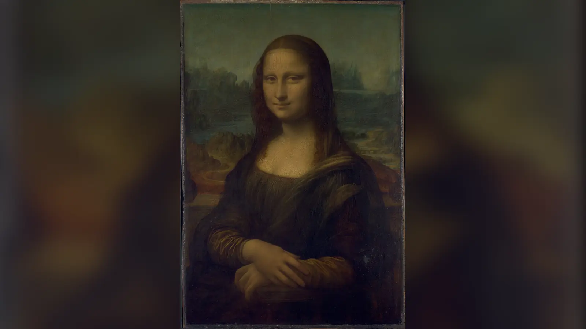
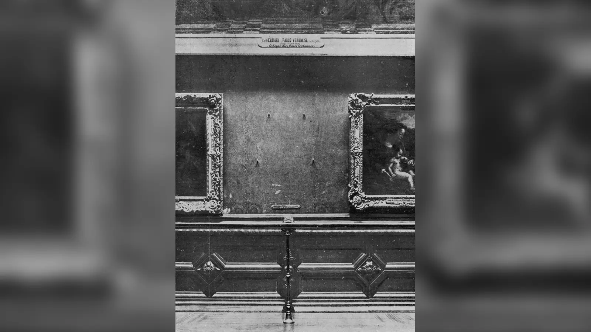
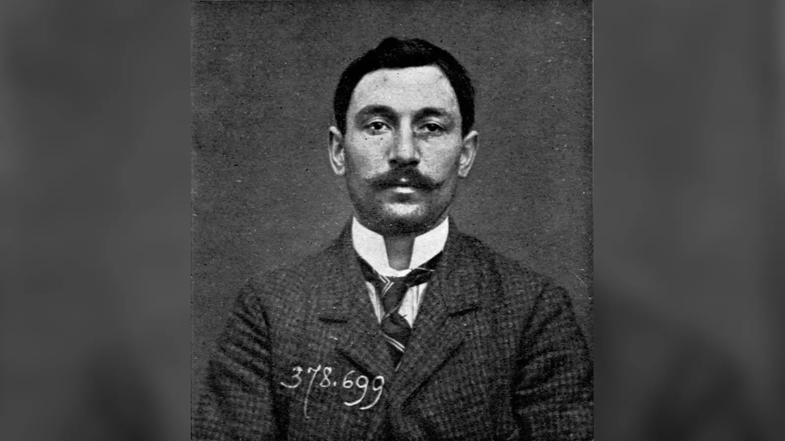
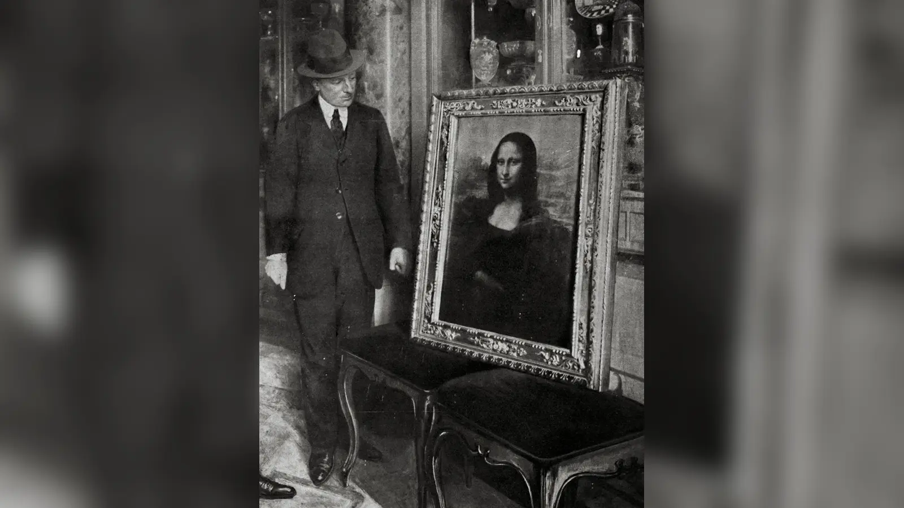

22 Ağustos 1911 Salı sabahı ressam Louis Béroud, Louvre’daki Salon Carré’ye geldiğinde Leonardo da Vinci’nin Mona Lisa’sını görmeyi bekliyordu. Bir gün önce müze halka kapalıydı; şimdi tablonun bulunması gereken yerde boşluk vardı. İlk anda bunun bir hırsızlık olduğu düşünülmedi. Louvre’daki eserler fotoğraflanmak veya teknik işlemler için zaman zaman yerlerinden alınabiliyordu. Fakat personel fotoğraf bölümünü kontrol ettiğinde tablo orada da değildi. Arama genişletildi; kısa süre sonra geride bırakılmış sergileme parçaları bulundu. Sorun artık yanlış yere götürülmüş bir tablo değil, Fransa’nın en önemli müzesinden kaybolmuş bir Leonardo’ydu.
Bugün bu sahne inanılmaz görünür. Mona Lisa dünyanın en sıkı korunan sanat eserlerinden biri olarak algılanıyor; Louvre’da iklim kontrollü koruyucu vitrinin arkasında sergileniyor. 1911’de ise müzecilik, personel dolaşımı ve güvenlik anlayışı bugünkünden farklıydı. Müzenin pazartesi günleri halka kapalı olması, bakım ve teknik işlerde çalışan kişilerin binada bulunmasını olağan hâle getiriyordu. Vincenzo Peruggia da Louvre’u dışarıdan tanımayan profesyonel bir soyguncu değildi. Müzede çalışmış İtalyan bir işçiydi ve koruyucu cam işleriyle bağlantılıydı.
Hırsızlığın ardından sorular çoğaldı. Polis neden Peruggia’yı yakalayamadı? Guillaume Apollinaire neden tutuklandı? Pablo Picasso gerçekten şüpheli miydi? Peruggia tabloyu İtalya’ya “geri vermek” için mi çaldı, yoksa milliyetçilik savunması maddi çıkar beklentisini örten kullanışlı bir anlatı mıydı? Daha önemlisi, 1911’de zaten saygın ve ünlü bir Rönesans başyapıtı olan Mona Lisa, iki yıl boyunca ortadan kaybolduğu için mi bugün dünyanın en tanınmış resmi hâline geldi?
Bazı sorulara mahkeme kayıtları ve arşiv belgeleri güçlü cevaplar verir; bazıları ise yüz yılı aşkın süredir büyüyen efsaneler yüzünden dikkatle ele alınmalıdır. Peruggia tek başına hareket ettiğini söyledi, ancak soruşturma olası yardımcıları bütünüyle dışlamadı. İtalya’ya dönme gerekçesini vatanseverlikle açıkladı, fakat mahkeme maddi çıkar aradığını düşündüren kanıtları da değerlendirdi. Eduardo de Valfierno adlı bir dolandırıcının hırsızlığı sipariş ettiği ve sahte Mona Lisalar sattığı hikâyesi çok ünlüdür, fakat bağımsız belgelerle doğrulanmış bir komplo değildir.
Louvre’da Bir Sabah: Mona Lisa’nın Yerinde Neden Boşluk Vardı?

Hırsızlık 21 Ağustos 1911 Pazartesi günü gerçekleşti. Louvre o gün ziyaretçilere kapalıydı; fakat “kapalı” olmak binanın boş olduğu anlamına gelmiyordu. Pazartesi, personelin bakım, taşıma, fotoğraf ve teknik işler yapabildiği çalışma günlerinden biriydi. İşçi kıyafetli birinin koridorlarda görülmesi bugünkü kadar olağan dışı değildi. Peruggia’nın müzenin işleyişini bilmesi bu koşulla birleşince hırsızlık için önemli bir açıklık oluştu.
Tablonun kaybolduğu ertesi gün kesinleşti. Béroud boş yeri görünce ilk varsayım eserin fotoğrafçılar tarafından alınmış olabileceğiydi. Bu, Louvre’un kaybı önemsemediğini değil, eserlerin kurum içinde hareket ettirilebildiği bir çalışma düzenini gösterir. Fotoğraf bölümünde olmadığı anlaşılınca alarm büyüdü. Müze kapatıldı, galeriler ve çıkışlar arandı, polis devreye girdi. Salon Carré’deki boş alan kısa sürede başlı başına bir haber nesnesine dönüştü.
Floransa Devlet Arşivi’nin Peruggia dosyasını tanıtan sergisi, 22 Ağustos’ta telgrafın bir önceki gün Louvre’dan ünlü La Gioconda’nın çalındığı haberini dünyaya yaydığını kaydeder. İnsanlar boş duvarı görmeye geldi; gazeteler kayıp portrenin görüntüsünü tekrar tekrar bastı. Hırsızlık aynı anda polis vakasına ve modern kitle iletişiminin uluslararası kültür olayına dönüştü.
Mona Lisa Çalınmadan Önce Ne Kadar Ünlüydü?
Mona Lisa’nın 1911’e kadar kimsenin önemsemediği ve hırsızlık sayesinde keşfedildiği anlatısı yanlıştır. Leonardo’nun ünü yüzyıllardır güçlüydü. Giorgio Vasari’nin 16. yüzyıldaki anlatısı portrenin erken şöhretinde etkili olmuş, eserin kopyaları daha 16. yüzyıldan itibaren yapılmıştı. Louvre bugün yüzü aşkın kopyanın bilindiğini belirtir. 19. yüzyılda Théophile Gautier, Walter Pater ve başka yazarların gülümseme ve gizem üzerine kurduğu edebî dil tabloyu kültürlü Avrupa kamuoyu içinde çoktan özel bir konuma taşımıştı.
Fakat hırsızlık öncesindeki sanat tarihsel ün ile sonrasındaki kitlesel tanınırlık aynı şey değildir. 1911 olayı itibarı medya şöhretine çevirdi. Gazeteler kayıp tablonun yüzünü dünyanın farklı ülkelerindeki okuyuculara taşıdı. Resmi hiç görmemiş insanlar bile artık bu yüzü tanıyabiliyordu. Boş duvar, polis soruşturması, ödül haberleri, ünlü şüpheliler ve 1913’teki dönüş aynı görüntüyü tekrar tekrar dolaşıma soktu.
Bu yüzden Mona Lisa’nın neden bu kadar ünlü olduğu sorusunun cevabı yalnız 1911 değildir. Leonardo’nun itibarı, sfumato, portrenin kimliği ve gülümsemesi çevresindeki söylem, 19. yüzyıl edebiyatı, hırsızlık, sonraki saldırılar, turizm ve çoğaltma kültürü birlikte çalıştı. Ancak Louvre’un kendi değerlendirmesi de hırsızlığın esere dünya çapında ve özellikle daha popüler bir ün kazandırdığını vurgular. 1911 başlangıç değil, ölçeğin değiştiği kırılmadır.
Mona Lisa Louvre’dan Nasıl Çalındı?
Ana fail konusunda belirsizlik yoktur: Vincenzo Peruggia 1913’te yakalandığında suçu itiraf etti ve yargılandı. Buna karşılık popüler anlatılardaki her ayrıntı aynı ölçüde kesin değildir. Peruggia’nın Louvre’da çalışmış olması, binayı tanıması ve işçi gibi görünmesinin kolaylığı temel çerçeveyi açıklar. Floransa arşivindeki soruşturma belgelerine göre yakalandıktan sonra müzeye hizmet veren bir işçi gibi davranarak tek başına girip çıktığını ve suç ortağı olmadığını ısrarla söyledi.
Peruggia’nın camcı ve dekorasyon işçisi olarak Louvre’la bağlantısı özellikle önemlidir. Tablo koruyucu cam ve çerçeve sistemiyle sergileniyordu. Bu donanıma yabancı olmaması eseri yerinden çıkarmayı sıradan bir ziyaretçiye göre kolaylaştırmış olabilir. Popüler hikâyelerde beyaz işçi önlüğü giydiği, tabloyu Salon Carré’den aldığı ve servis merdiveninde ağır çerçeve ile koruyucu parçalardan ayırdığı anlatılır. Genel güzergâh tarihsel tanıklıklarla uyumludur; ancak geceyi müzede saklanarak geçirdiği veya belirli sayıda suç ortağıyla hareket ettiği gibi ayrıntılar kaynaklarda aynı kesinlikte değildir.
1914 savcılık değerlendirmesi bazı ayrıntıların tanıklıklarla desteklendiğini gösterir. Hırsızlık sabahı saat yediden kısa süre sonra bir Louvre işçisi servis merdivenine açılan kapının kolunun içeriden sökülmüş olduğunu ve basamaklarda bir işçi gördüğünü bildirmişti. Başka bir tanık yaklaşık 7.30’da Quai du Louvre’da tablo boyutlarına uygun bir paket taşıyan birini gördüğünü söylemişti. Savcılık ise Peruggia’nın bazı beyanlarını kuşkuyla karşılayarak olası suç ortaklığı ihtimalini tamamen kapatmadı.
Dolayısıyla olay kusursuz planlanmış profesyonel operasyon değildi. Başarıda yüksek teknoloji değil, kurumun gündelik çalışma düzenine uyum sağlamak etkiliydi. Peruggia müze ortamında yabancı görünmüyor, tablo ağır dış donanımından ayrıldığında taşınabilir hâle geliyordu. Modern elektronik erişim kayıtları, hareket sensörleri ve bugünkü katmanlı koruma sistemi yoktu.
Louvre Hırsızlığı Neden Hemen Fark Etmedi?
Hırsızlığın kolaylığını yalnız “Louvre’da güvenlik yoktu” cümlesiyle açıklamak dönemin kurum yapısını fazla basitleştirir. Müze, ziyaretçiye kapalı günlerde bütünüyle boşalmıyordu; temizlikçiler, fotoğrafçılar, çerçeveciler, bakım görevlileri ve dışarıdan gelen ustalar farklı işler için galerilerde dolaşabiliyordu. Bir tablonun fotoğraf atölyesine veya koruma işlemine götürülmesi de olağan dışı değildi. Dolayısıyla duvardan indirilen bir eser, ilk birkaç dakika içinde otomatik olarak suç alarmı yaratmıyordu. Peruggia’nın asıl avantajı görünmezlik değil, bu normal iş akışının içinde makul görünmesiydi. Hırsızlık, bir kapının veya kilidin tek başına başarısızlığından çok, kurumun çalışanlara ve günlük rutinlere dayanan güven modelindeki boşluğu ortaya çıkardı. Olaydan sonra Louvre’un eleştirilmesinin nedeni de buydu: Fransa’nın ulusal koleksiyonunu barındıran müze, eserlerin yer değiştirmesini anında fark edecek ortak bir kayıt ve denetim zincirine sahip değildi.
En şaşırtıcı ayrıntılardan biri tablonun 21 Ağustos’ta alınmasına rağmen kaybın 22 Ağustos’ta kesinleşmesidir. Temel neden hırsızlık gününün pazartesi olmasıydı. Müze halka kapalıydı ve teknik işler sürüyordu. Salı günü Béroud tabloyu göremediğinde de ilk açıklama suç değil, fotoğraf işlemiydi. Bu olasılık elenince olay hızla güvenlik krizine dönüştü.
Asıl sorun, kurum içinde bir eserin nerede olduğunun anlık ve merkezi biçimde izlenmesini sağlayacak bugünkü prosedürlerin bulunmamasıydı. Büyük bir müzede personel, fotoğrafçı, teknisyen ve işçiler arasındaki iş bölümü, bir tablonun geçici olarak başka bölüme götürülmesini ilk bakışta makul açıklama hâline getiriyordu. Kaybın anlaşılmasından sonra Louvre kapatıldı ve geniş arama başlatıldı.
Bu başarısızlık dönemin polis teknolojisinin hiç olmadığı anlamına gelmez. Paris polisi parmak izi ve antropometrik kimliklendirme yöntemlerini kullanıyordu. Fakat sınıflandırma ve kayıt eşleştirme bugünkü dijital sistemlerden çok farklıydı. Peruggia da soruşturma sırasında sorgulandı, ancak şüpheyi üzerinden atmayı başardı.
Paris Polisi Mona Lisa’yı Nasıl Aradı?
Soruşturmanın teknik imkânları, olayın neden geriye dönük bakıldığında bu kadar şaşırtıcı göründüğünü açıklar. Fransa, Alphonse Bertillon’un geliştirdiği antropometrik kimliklendirme ve suç fotoğrafçılığı yöntemlerinde öncüydü; parmak izi de polis çalışmalarında giderek önem kazanıyordu. Buna rağmen bir teknolojinin mevcut olması, farklı kayıtların otomatik olarak eşleştirildiği anlamına gelmez. Olay yerinden elde edilen izin kime ait olduğunun anlaşılması için uygun şüphelinin dosyasındaki izlerle karşılaştırılması gerekiyordu. Peruggia daha önce polisle karşılaşmış olsa da kayıtların sınıflandırılması ve arama biçimleri bugünkü sayısal veri tabanlarından çok uzaktı. Ayrıca soruşturma, müze personeli ve eski çalışanlardan sanat piyasasına, sınır kapılarından avangard çevrelere kadar çok geniş alana yayıldı. Binlerce ihbar ve sansasyonel teori, gerçek kanıtla söylentiyi ayırmayı zorlaştırdı. Bu nedenle “polis parmak izini bulduğu hâlde hiçbir şey yapmadı” demek eksiktir; sorun, izin kendisinden çok onu doğru kişiyle zamanında ilişkilendirecek sistemin yetersizliğiydi.
Vaka baştan itibaren olağanüstü baskı altındaydı. Louvre’dan bir Leonardo’nun kaybolması soruşturmayı yalnız adli değil, ulusal bir meseleye çevirdi. Müze çalışanları sorgulandı, olası güzergâhlar incelendi, geride kalan parçalarda izler arandı. Basın ise her ihtimali büyütüyor, ihbarlar ve spekülasyonlar polis çalışmasının çevresinde ikinci bir soruşturma evreni yaratıyordu.
Peruggia’nın daha sonra polis tarafından sorgulandığı fakat yakalanmadığı bilinir. “Parmak izi ellerindeydi ama dosyada bulamadılar” biçimindeki popüler anlatı, dönemin kayıt sistemleri açıklanmadan kullanıldığında yanıltıcıdır. Parmak izi bilimi gelişiyordu; buna karşın kayıtların erişimi ve eşleştirilmesi modern veri tabanı hızında değildi.
Çıkmaz büyüdükçe tabloyu uluslararası bir koleksiyoncunun sipariş ettiği, Amerika’ya kaçırıldığı, siyasi saldırı olduğu veya geniş bir müze içi şebeke bulunduğu gibi teoriler ortaya çıktı. Aaron Freundschuh’un 1911 vakası üzerine araştırması, Parislilerin bu suç hikâyelerini kentin polis, yabancılar ve mekânsal denetim hakkındaki daha geniş kaygılarıyla birleştirdiğini gösterir.
Picasso ve Guillaume Apollinaire Neden Şüpheli Oldu?
Soruşturmanın bu yöne sapması dönemin polis kültürünü de gösterir. Paris polisi yalnız fiziksel kanıtları değil, avangard çevreleri, yabancıları ve daha önce müzeden eser çıkarmış kişilerin ilişkilerini izliyordu. Mona Lisa’nın kaybı ulusal aşağılanma duygusuna dönüştükçe yetkililer üzerinde hızla bir fail bulma baskısı oluştu. Bu ortamda Pieret’nin itirafları, Leonardo tablosuyla doğrudan bağlantı kurmasa da polise somut bir Louvre hırsızlığı ağı sundu. Apollinaire ve Picasso’nun isimleri bu nedenle manşetlere taşındı. İki sanatçının modernist çevrelere mensup olması ve Picasso’nun çalıntı heykelcikleri satın almış bulunması kamuoyu açısından sansasyoneldi; fakat sansasyon kanıt değildi. Dosyanın bu bölümü, ünlü bir şüphelinin hikâyeyi daha çekici hâle getirmesiyle gerçek failin belirlenmesinin aynı şey olmadığını gösterir. Peruggia’nın iki yıl daha yakalanamaması, soruşturmanın görünür kültür çevrelerine yönelmesinin pratik bedelini de ortaya koydu.
Pablo Picasso’nun “Mona Lisa’yı çalmaktan tutuklandığı” iddiası doğru değildir. Adı soruşturmaya girdi ve sorgulandı; fakat onu vakaya bağlayan şey Mona Lisa’ya dair doğrudan kanıt değildi. Zincirin başında Honoré Joseph Géry Pieret adlı Belçikalı bir hırsız bulunuyordu. Pieret Louvre’dan daha önce küçük İber heykelcikleri çalmıştı. Bu eserlerden bazıları Picasso’nun çevresine ulaşmış, Pieret de bir dönem Guillaume Apollinaire’in yanında bulunmuştu.
Mona Lisa kaybolduktan sonra Pieret’nin geçmiş Louvre hırsızlıkları basına yansıdı. Apollinaire’in bağlantısı polisi şaire götürdü ve Apollinaire Eylül 1911’de tutuklandı. Picasso sorgulandı. Ne Picasso’nun ne Apollinaire’in Leonardo tablosunun çalınmasına katıldığı kanıtlandı.
Bu ayrım önemlidir: Polis gerçekten Louvre’dan çalınmış başka nesnelerin dolaştığı bir çevreye ulaşmıştı; dolayısıyla bağlantı tamamen hayalî değildi. Yanlış olan farklı Louvre hırsızlıklarını tek suça dönüştürmek ve Picasso’yu Mona Lisa’nın faili gibi sunmaktır. Picasso’nun daha sonraki sanatının kamusal gücü için Guernica tablosu ayrı bir bağlam sunar; 1911’de ise Picasso fail değildi.
Mona Lisa’yı Çalan Vincenzo Peruggia Kimdi?

Peruggia’nın Louvre’la ilişkisi onu hem sıradan hem sıra dışı bir fail hâline getirir. Müze koleksiyonunun bilimsel veya sanatsal değerini belirleyen uzmanlardan biri değildi; eserlerin sergilenmesini mümkün kılan görünmez emek zincirinin parçasıydı. Koruyucu cam ve dekorasyon işleri, galerilerin fiziksel düzenine yaklaşmasına ve personelin nasıl hareket ettiğini gözlemlemesine imkân verdi. Fakat bu durum tek başına hırsızlığı önceden tasarlanmış profesyonel operasyon kanıtına dönüştürmez. Sonraki anlatılar Peruggia’yı bazen olağanüstü plan kuran usta suçlu, bazen de Leonardo’yu “vatanına döndüren” saf milliyetçi olarak iki uçta resmetti. Mahkeme belgelerinin gösterdiği kişi daha karmaşıktır: çalışma hayatı sayesinde fırsatları bilen, tabloyu uzun süre saklayabilen, vatanseverlik söylemi kullanan ve aynı zamanda eserden maddi karşılık beklediğine işaret eden davranışlarda bulunan bir sanık. Biyografisini tek bir kahramanlık veya açgözlülük kalıbına sığdırmak bu çelişkileri ortadan kaldırır.
Vincenzo Peruggia 1881’de Dumenza’da doğmuş, Fransa’ya çalışmak için göç etmiş İtalyan bir işçi, dekoratör ve camcıydı. Louvre’la ilişkisi bu mesleki geçmişten geliyordu. Müzenin içinde çalışmış olması galerilerin düzenini ve işçilerin hareketini tanımasını sağladı. Bu ayrıntı onu “usta suçlu”dan çok kurumun gündelik sistemindeki açıklıkları bilen eski çalışan profiline yaklaştırır.
1913’te yakalandığında kendisini İtalyan vatanseverliği üzerinden savundu. Leonardo’nun eserini İtalya’ya geri götürdüğünü söyledi. Bu anlatı bazı İtalyan çevrelerinde sempati topladı ve sonradan Peruggia’nın romantik halk kahramanı gibi sunulmasına yol açtı. Fakat mahkeme dosyası bu açıklamayı tek başına kabul etmedi. Babasına yaklaşan bir servetten söz eden mektupları, Londra’daki girişimi ve sanat tacirleriyle temasları maddi çıkar ihtimalinin delilleri arasında değerlendirildi.
Üstelik savunmanın merkezindeki “Fransa İtalya’dan aldı” fikri Mona Lisa özelinde yanlıştı. Leonardo yaşamının son yıllarında Fransa’ya gitmiş ve tabloyu yanında götürmüştü; eser daha sonra Fransız kraliyet koleksiyonuna geçti. Napolyon döneminde sarayda sergilense de Fransa’ya gelişi Napolyon’un İtalya seferlerinden çok daha öncedir.
Peruggia Tabloyu İki Yıl Boyunca Nerede Sakladı?
Floransa Devlet Arşivi’nin dava belgelerine dayanan sergisi, Peruggia’nın Mona Lisa’yı Paris’teki odasında yaklaşık iki yıl üç ay tuttuğunu kaydeder. Dünya basınının aradığı tablo Paris’ten hemen kaçırılmamıştı; failin yaşadığı mekânda saklanıyordu.
“İki yıl yatağının altında durdu” cümlesi sık tekrarlanır, fakat arşiv belgelerinin güvenle gösterdiği şey eserin Peruggia’nın Paris odasında saklanmış olmasıdır. 1913’te yapılan aramada eşyaları arasında çift dipli kaba beyaz ahşap bir sandık ve valiz gibi nesneler kayda geçirilmiştir. Bütün kayıp dönemini tek bir saklama noktasına indirgemek gereksizdir.
Temmuz 1913’te Peruggia Londra’ya da gitti. Sorgu kayıtlarına göre Old Bond Street’te Duveen kardeşlerin antikacı dükkânına başvurdu ve hikâyesini anlattı; kendisine eseri meşru sahibine geri vermesi tavsiye edildi. Mahkeme bu girişimi de yalnızca özverili vatanseverlik savunmasına karşı değerlendirdi.
Mona Lisa Floransa’da Nasıl Ortaya Çıktı?

Kasım 1913’te Peruggia Floransalı antikacı Alfredo Geri ile temas kurdu. Floransa Devlet Arşivi’ne göre Geri, Corriere della Sera’da önemli eski resimlerin satışıyla ilgili ilan vermişti. Peruggia bu ilanı gördü ve kendisini “Leonard V.” adıyla tanıtan bir mektup gönderdi. Elinde Leonardo’nun kayıp tablosunun bulunduğunu söylüyordu. Geri başlangıçta mektubu şaka sanmasına rağmen Uffizi yöneticisi Giovanni Poggi ile görüştü.
Peruggia Floransa’ya geldiğinde tabloyu gösterdi. Poggi’nin rolü kritikti: eser yalnız benzerlik üzerinden kabul edilmedi. 15 Aralık 1913 tarihli uzman inceleme tutanağı, Poggi’nin tabloyu hırsızlık öncesi Alinari ve Braun gibi firmaların fotoğraflarıyla karşılaştırdığını ve özgünlüğünü doğruladığını gösterir.
Peruggia 12 Aralık 1913’te yakalandı. İlk sorgudan itibaren hırsızlığı itiraf etti ve tek başına hareket ettiğini söyledi. Böylece iki yıldır çözülemeyen dosya, failin tabloyu sanat dünyasına yeniden sokmaya çalışmasıyla birkaç gün içinde çözüldü. Bir Leonardo’yu çalmak mümkün olmuştu; dünyanın tanıdığı bu eseri meşru piyasada elden çıkarmak çok daha zordu.
Peruggia Mona Lisa’yı Neden Çaldı?
Peruggia’nın açıklaması vatanseverlikti. Bu savunma tamamen uydurma sayılmak zorunda değildir; dönemin milliyetçi atmosferinde böyle bir düşünce taşıması mümkündür. Fakat sanığın kendi gerekçesi otomatik olarak tarihsel gerçeğin tamamı değildir.
Floransa mahkemesi de farklı kanıtları değerlendirdi. Babasına yazdığı mektuplarda yaklaşan servetten söz etmesi, Londra’daki teması ve antikacılarla görüşmeleri maddi çıkar ihtimalini güçlendirdi. İlk derece mahkemesi onu yalnızca fanatik bir vatansever olarak görmedi; temyiz kararı da vatanseverlik açıklamasının maddi çıkar ihtimalini ortadan kaldırmadığını belirtti.
Ayrıca Mona Lisa’nın Napolyon tarafından İtalya’dan yağmalandığı iddiası yanlıştır. Leonardo tabloyu Fransa’ya kendisi götürmüş, eser daha sonra kraliyet koleksiyonuna girmişti. Bu nedenle en dengeli cevap, motivasyonu tek kelimeye indirmemektir: milliyetçi duygu, para beklentisi ve kişisel başarı arzusu bir arada bulunmuş olabilir.
Mona Lisa İtalya’dan Fransa’ya Nasıl Döndü?
İtalyan makamları eserin Fransa’ya ait olduğunu kabul etti; fakat geri gönderilmeden önce kısa süreli İtalya sergileri büyük kamuoyu olayına dönüştü. Floransa Devlet Arşivi’ne göre Mona Lisa 14–18 Aralık 1913 arasında Uffizi’de halka gösterildi. Önce Poggi’nin ofisinde uzmanlara sunuldu, ardından Sala degli Autoritratti’de sergilendi. Binlerce kişi geldi.
20 Aralık’ta tablo özel ceviz sandıkla Floransa’dan Roma’ya götürüldü. 21 Aralık’ta Fransa’nın Roma Büyükelçisi Camille Barrère’e Palazzo Farnese’de resmî teslim yapıldı. Noel günleri çevresinde Galleria Borghese’de de sergilendi. 30 Aralık gecesi Milano’dan Fransa’ya doğru yola çıktı; ertesi gün Modane’da teslim töreni gerçekleşti. Paris’te École des Beaux-Arts’da üç gün gösterildikten sonra Louvre’a döndü.
Bu süreç “İtalya tabloyu geri vermek istemedi” gibi basit bir milliyetçi anlatıyla uyuşmaz. İtalyan kurumları dönüşü organize etti; Giovanni Poggi ve Corrado Ricci Fransa tarafından Légion d’honneur ile ödüllendirildi. Alfredo Geri de bulunuşa katkısı nedeniyle ödül aldı.
Vincenzo Peruggia Ne Ceza Aldı?
Floransa Devlet Arşivi’nin yayımladığı mahkeme kayıtlarına göre ilk derece mahkemesi 5 Haziran 1914’te Peruggia’yı suçlu buldu ve bir yıl 15 gün hapis cezasına çarptırdı. Savunma sanığın psikolojik durumu ve motivasyonu üzerine değerlendirmeler yaptırdı; mahkeme eylemin sonuçlarını anlayamayacak durumda olduğu tezini kabul etmedi.
29 Temmuz 1914 tarihli temyiz kararı cezanın temel gerekçelerini korudu, fakat süreyi yedi ay sekiz güne indirdi. Peruggia bu süreyi tutuklu kaldığı dönemde zaten doldurmuş olduğundan serbest kaldı. Bu, “vatansever kahraman olduğu için hiç ceza almadı” anlamına gelmez. Mahkeme onu suçlu buldu ve çıkar beklentisini açıkça tartıştı.
Hırsızlığın Arkasında Büyük Bir Sahtecilik Çetesi Var mıydı?
Valfierno anlatısının kalıcılığı, kanıt gücünden çok hikâye kurma başarısından kaynaklanır. Tek başına hareket eden eski bir işçinin tabloyu odasında saklaması, uluslararası sahtecilik şebekesinin çok sayıda zengin koleksiyoneri kandırması kadar sinematik görünmez. Decker’ın 1932’de yayımladığı anlatı ise hırsızlığa görünmez bir beyin, uzman bir kopyacı ve küresel satış planı ekleyerek bütün boşlukları kusursuz biçimde doldurur. Tam da bu kusursuzluk şüphe nedenidir. Valfierno ile Peruggia arasındaki ilişkiyi gösteren yazışmalar, ödeme kayıtları veya mahkeme belgeleri bulunmadığı gibi, satıldığı ileri sürülen kopyaların güvenilir provenans zincirleri de ortaya konamamıştır. Bir hikâyenin dönemin gazetelerinde ve sonraki kitaplarda tekrar edilmesi onu bağımsız olarak doğrulamaz. Bu teori makalede yer almalıdır; çünkü okurlar tarafından yoğun biçimde aranır ve hırsızlığın popüler kültürdeki yaşamını açıklar. Ancak olayın kanıtlanmış çözümüyle aynı düzlemde sunulmamalıdır.
En sinematik teori Eduardo de Valfierno ve Fransız sahteci Yves Chaudron çevresinde kuruludur. Hikâyeye göre Valfierno hırsızlığı organize etmiş, Chaudron sahte kopyalar hazırlamış ve hırsızlıktan sonra bunlar “çalınmış orijinal” olduğuna inanan koleksiyonculara satılmıştır. Bazı versiyonlar altı sahte Mona Lisa’dan söz eder.
Sorun, bu anlatının çağdaş polis ve mahkeme belgeleriyle doğrulanmamasıdır. Teorinin ünlü kaynağı gazeteci Karl Decker’ın 1932’de The Saturday Evening Post’ta yayımladığı hikâyedir. Decker, Valfierno’nun kendisine olayı anlattığını ileri sürdü. Ancak bağımsız belgeler Valfierno’nun Peruggia’yı yönettiğini, Chaudron’un belirli sayıda kopya ürettiğini veya bunların hırsızlık sayesinde satıldığını kanıtlamaz.
Peruggia ise sorgulamalarında tek başına hareket ettiğini söyledi. Savcılığın bazı ayrıntılar nedeniyle olası yardımcılar konusunda kuşku duyması, 1932’de anlatılan büyük sahtecilik planını doğrulamaz. Valfierno hikâyesi olayın sonradan nasıl efsaneleştirildiğini anlamak için değerlidir; belgelenmiş komplo olarak kullanılamaz.
Mona Lisa Hırsızlık Sayesinde mi Dünyanın En Ünlü Tablosu Oldu?
En doğru cevap “tek başına değil, ama olağanüstü ölçüde katkıda bulundu”dur. Mona Lisa 1911’den önce de ünlüydü. Leonardo’nun itibarı, Vasari’den 19. yüzyıl yazarlarına uzanan eleştiri geleneği, portrenin teknik niteliği ve gülümsemesi çevresindeki edebî kültür statüsünü çoktan yükseltmişti.
Hırsızlık şöhretin toplumsal ölçeğini değiştirdi. 1911 basını sanat eserini suç haberi, uluslararası gizem, ulusal gurur tartışması ve görsel ikon olarak aynı anda dolaşıma soktu. Gazetelerin resmi sürekli basması, sanat kitapları ve müze ziyaretleriyle sınırlı kalabilecek bir yüzü kitlesel medya nesnesine dönüştürdü. Louvre bu dönemi “jocondomania”nın yükselişiyle ilişkilendirir.
1913’te tablo bulunduğunda hikâye ikinci kez patladı. Floransa, Roma ve Paris sergileri, kalabalıklar ve Peruggia’nın davası kayıp görüntüyü “geri dönen ünlü”ye çevirdi. Sonraki yüzyılda Duchamp’tan reklamlara, kartpostallardan turistik ürünlere ve uluslararası sergilere kadar çoğaltma kültürü bu ünü yeniden üretti.
Fakat bugünkü konumu tek medya olayına indirgemek eserin sanat tarihsel geçmişini siler. Hırsızlık katalizördü; Leonardo’nun adı, resmin özellikleri ve daha önce oluşmuş gizem söylemi zemini hazırlamıştı. Müze mekânı ve izleyicinin sanat eserinin anlamına nasıl katıldığıyla ilgilenen okurlar için Las Meninas’ın izleyiciyi resme dahil eden yapısı başka bir güçlü örnektir.
Mona Lisa Hırsızlığı Müze Güvenliğini Nasıl Değiştirdi?
1911 hırsızlığı Louvre için büyük kurumsal utançtı ve müze güvenliğinin yalnız bekçilerle değil, eser hareketlerinin kaydı, personel erişimi ve fiziksel koruma üzerinden düşünülmesi gerektiğini görünür hâle getirdi. Yine de “modern müze güvenliği bu olaydan sonra bir gecede icat edildi” demek doğru değildir. Sistemler 20. yüzyıl boyunca teknoloji, savaş, vandalizm ve başka hırsızlıkların etkisiyle katman katman değişti.
Mona Lisa özelinde koruma giderek sıkılaştı. Louvre’un güncel açıklamasına göre eser 2005’ten beri Salle des États’da özel koruyucu vitrinde sergileniyor. Kavak panel zamanla çalışmış ve çatlak oluşmuştur; dolayısıyla vitrinin görevi yalnız saldırılara karşı fiziksel bariyer yaratmak değil, sıcaklık ve nemi son derece kararlı tutmaktır. Güvenlik ve konservasyon aynı yapıda birleşir.
Eser daha sonraki yıllarda da saldırıların hedefi oldu. 2009’da koruyucu cama seramik kupa fırlatıldı; 2022’de cama pasta sürüldü, 2024’te protestocular çorba attı. Koruyucu bariyer tablonun kendisine ulaşılmasını engelledi. Günümüzde ziyaretçi akışı, fiziksel mesafe, görevliler, giriş kontrolleri ve özel vitrin birlikte çalışır.
Modern müze güvenliği aynı zamanda erişilebilirlik problemidir: eser halka açık kalmalı, fakat erişilebilirlik onu savunmasız bırakmamalıdır. Güncel müzecilik araştırmaları bu gerilimin hâlâ sürdüğünü gösterir. 1911’in en kalıcı dersi, güvenliğin yalnız “kapıyı kilitlemek” değil, kurum içindeki bütün hareket zincirini anlamak olduğudur.
Basın, Boş Duvar ve 1911’de Doğan Mona Lisa Olayı
Boş duvarın haber değeri alışılmadık bir görsel paradoks yarattı. Gazeteler artık müzede bulunmayan bir resmi tekrar tekrar basıyor, okurlar aynı yüzü aranan kişi fotoğrafı gibi tanımaya başlıyordu. Tablonun fiziksel yokluğu, görüntüsünün dolaşımını durdurmak yerine hızlandırdı. Telgraf haberin sınırları aşmasını, foto-mekanik baskı ise portrenin farklı ülkelerde benzer manşetlerle çoğalmasını sağladı. Karikatürler, kartpostallar, reklamlar ve sahte ihbarlar olayın yalnız adli değil ticari bir medya ürününe dönüşmesine katkıda bulundu. Louvre’a gelen ziyaretçilerin boşluğu görmek istemesi de bu dönüşümün parçasıydı: müze, eserin varlığı kadar yokluğunun sergilendiği bir sahneye dönüşmüştü. Bu nedenle 1911 hırsızlığı Mona Lisa’nın şöhret tarihinde yalnız büyük bir haber değildir. Modern kitlesel medyanın bir sanat eserini tekrarlama, ona ortak hafıza kazandırma ve kayıp nesneyi küresel bir simgeye dönüştürme gücünün erken ve çarpıcı örneklerinden biridir.
Hırsızlığın büyüklüğünü anlamak için 1911’in medya ortamını da hesaba katmak gerekir. Fotoğraflı günlük gazetelerin, telgraf ajanslarının ve kitlesel haber dolaşımının geliştiği bir dönemde Louvre vakası neredeyse ideal bir haberdi: herkesin anlayabileceği bir kayıp, güçlü bir ulusal kurum, dünyaca tanınan bir sanatçı, ortada görünmeyen bir fail ve her gün yeni bir teori. Floransa Devlet Arşivi’nin Peruggia dava dosyasına dayanan sergisi de haberin 22 Ağustos’ta telgrafla hızla yayıldığını vurgular. Böylece müze içindeki güvenlik olayı saatler içinde sınır aşan kültürel bir drama dönüştü.
Basının rolü yalnız bilgi vermek değildi. Mona Lisa’nın yüzü gazetelerde tekrar tekrar çoğaltıldıkça hırsızlığın kendisi tablonun görsel tanınırlığını artırıyordu. Eser müzede yoktu fakat kamusal alanda hiç olmadığı kadar görünür hâle gelmişti. Louvre’un güncel tarih anlatısı da kayıp döneminin eseri çok daha geniş bir halk kitlesi için popülerleştirdiğini belirtir. Boş duvarın ziyaretçi çekmesi bu dönüşümün en çarpıcı görüntüsüydü: insanlar artık yalnız Leonardo’nun resmine değil, onun başına gelen olaya da ilgi duyuyordu.
Gazeteler soruşturmanın belirsizliklerini de büyüttü. Her yeni şüpheli, ihbar ve komplo ihtimali yeni başlık demekti. Apollinaire’in tutuklanması ve Picasso’nun sorgulanması yalnız adli olaylar olarak kalmadı; avangard sanat çevreleri, yabancılar ve Louvre güvenliği hakkındaki tartışmaların parçasına dönüştü. Aaron Freundschuh’un araştırması, Mona Lisa hırsızlığı çevresindeki suç anlatılarının Parislilerin kent, otorite ve mekânsal denetim kaygılarıyla iç içe geçtiğini gösterir. Bu yüzden hırsızlık, tek failin eyleminden daha büyük bir toplumsal hikâyeye dönüştü.
Bununla birlikte “gazeteler Mona Lisa’yı ünlü yaptı” demek de aşırı basitleştirmedir. Haber bu kadar ilgi gördü çünkü tablo zaten Leonardo’ya ait, değerli ve tanınmış bir eserdi. Fakat bu önceden var olan itibar olayın olağanüstü dolaşıma girmesini sağladı; dolaşım da tablonun ününü daha önce ulaşmadığı toplumsal katmanlara taşıdı. Sanat tarihsel itibar ile medya görünürlüğü birbirini besledi.
1911 Louvre’u ile Bugünün Müzesi Arasındaki Fark
Hırsızlığın kolaylığını değerlendirirken geçmişe bugünün güvenlik beklentilerini doğrudan uygulamak yanıltıcıdır. 20. yüzyıl başındaki büyük müzeler korumasız değildi; bekçiler, personel kuralları, kapılar ve sergileme donanımları vardı. Fakat güvenlik büyük ölçüde fiziksel gözetim ve çalışanların olağan davranışları tanımasına dayanıyordu. Eserlerin kurum içindeki hareketlerini gerçek zamanlı izleyen elektronik sistemler, dijital erişim kayıtları, modern kamera ağları ve katmanlı alarm teknolojileri henüz yoktu.
Peruggia’nın avantajı bu insan merkezli yapıda ortaya çıktı. Daha önce Louvre’da çalışmış birinin işçi gibi görünmesi şüphe uyandırmayabilirdi. Pazartesi gününün ziyaretçilere kapalı fakat çalışanlara açık olması, sıradan ziyaretçi davranışı ile personel davranışı arasındaki sınırı değiştirmişti. Hırsızlık bu nedenle yalnız “güvenlik yoktu” diye açıklanamaz; mevcut düzenin güvendiği varsayımlardan biri kötüye kullanılmıştı. Peruggia’nın kurum bilgisi, tablonun taşınabilir boyutu ve personel hareketinin olağanlığı aynı anda etkili oldu.
Bugünkü Mona Lisa koruması bunun tersine çok katmanlıdır. Louvre’un resmî bilgisine göre tablo Salle des États’da iklim kontrollü koruyucu vitrinin içinde tutulur. Vitrin vandalizme karşı fiziksel bariyer olmanın yanında hassas kavak panelin sıcaklık ve nem koşullarını kararlı tutar. Ziyaretçi hareketi, fiziksel mesafe, salon görevlileri ve müzenin genel giriş kontrolleri korumanın diğer parçalarıdır. 1911’den bugüne değişen şey yalnız daha kalın bir cam değil, müzenin eser, insan, mekân ve risk arasındaki ilişkiyi yönetme biçimidir.
Yine de modern güvenlik mutlak değildir. Müzeler eserleri korurken onları görünür ve erişilebilir tutmak zorundadır. Güncel müzecilik araştırmaları aşırı güvenliğin ziyaret deneyimini ve kurumun kamusal işlevini zayıflatabileceğini, yetersiz güvenliğin ise geri dönüşsüz kayıplara yol açabileceğini gösterir. Mona Lisa’nın tarihi bu gerilimin uç örneğidir. 1911’de eser olağan çalışma düzenindeki açıklıktan yararlanılarak dışarı çıkarılmıştı; bugün aynı eser milyonlarca insanın görebildiği fakat fiziksel olarak erişemediği kontrollü bir ortamda tutuluyor.
Hırsızlığın Fransız ve İtalyan Kamuoyundaki Yankısı
Olayın iki ülkede yarattığı duygular tek biçimli değildi. Fransa’da öfke yalnız hırsıza yönelmiyor, devletin en görünür kültür kurumunun eseri koruyamamasına da çevriliyordu. Muhalif gazeteler güvenlik zafiyetini siyasal eleştiriye dönüştürürken, hırsızın yabancı olması göçmenlere ve İtalyan işçilere yönelik önyargıları besleyebilecek bir malzeme sundu. İtalya’da ise Peruggia’nın vatanseverlik savunmasına sempati duyanlarla eylemi adi hırsızlık olarak görenler aynı anda vardı. Devlet kurumlarının tutumu popüler coşkudan daha açıktı: eser Fransa’nın mülkiyetindeydi ve iade edilecekti. Mona Lisa’nın dönüşten önce Floransa ve Roma’da sergilenmesi, bu hukuki kabul ile ulusal gururun birlikte yönetilmesini sağladı. Böylece tablo kısa süreliğine “geri dönmüş İtalyan başyapıtı” gibi kutlanırken diplomatik süreç Fransa’ya teslim yönünde ilerledi. Peruggia’nın kamuoyundaki imgesi ile mahkeme dosyasındaki sanık konumu arasındaki fark burada belirginleşti.
Peruggia’nın yakalanması olayın milliyetçi boyutunu yeniden alevlendirdi. İtalya’da bazı kişiler onun “İtalyan eserini ülkesine geri getirdiği” savunmasına sempati duydu; ancak bu tepki İtalyan devletinin resmî tutumuyla aynı değildi. Devlet kurumları tablonun Fransa’ya ait olduğunu kabul etti ve iade sürecini yürüttü. Mona Lisa’nın Floransa ve Roma’da kısa süre sergilenmesi ise bulunuşun büyük bir kamusal olaya dönüşmesine izin verdi. Binlerce kişinin Uffizi’ye akın etmesi, hırsızlığın iki yılda yarattığı yeni şöhretin İtalya’daki görünür kanıtlarından biriydi.
Fransa açısından olay ulusal bir kültür kurumunun güvenilirliğine darbe vurmuştu. Tablonun geri dönmesi bu nedenle yalnız kayıp malın bulunması değildi; Louvre’un uğradığı sembolik zararın da kısmen onarılmasıydı. Buna rağmen iade süreci iki ülke arasında açık bir kültürel çatışmaya dönüşmedi. Giovanni Poggi ve Corrado Ricci’nin Fransa tarafından Légion d’honneur ile ödüllendirilmesi, Alfredo Geri’nin bulunuşa katkısı nedeniyle ödül alması ve resmî teslim törenleri, devlet düzeyinde iş birliğinin özellikle vurgulandığını gösterir.
Bu ayrım Peruggia’nın hikâyesini romantikleştirmemek için önemlidir. Kamuoyunda kahramanlaştırılan bir fail ile mahkemenin değerlendirdiği sanık aynı kişi olsa da iki anlatı aynı değildir. Mahkeme maddi çıkar işaretlerini ciddiye almış, İtalyan kurumları ise eseri kalıcı biçimde sahiplenmeye çalışmamıştır. Sonraki popüler kültür çoğu zaman bu karmaşık tabloyu “İtalyan vatansever Fransızlardan Leonardo’yu geri aldı” biçiminde basitleştirmiştir. Arşiv belgeleri ise olayın hem motivasyon hem diplomasi bakımından bundan daha katmanlı olduğunu gösterir.
Sonuç — Boş Bir Duvar Bir Tabloyu Nasıl Küresel İkona Dönüştürdü?
1911’de Louvre’daki boş duvar, sanat eserinin değerinin yalnız fiziksel nesnesinde bulunmadığını gösterdi. Mona Lisa ortadan kaybolduğu anda görüntüsü çoğalmaya başladı. Gazetelerde basıldı, ödül ilanlarında yer aldı, karikatürlere dönüştü, polis haberlerinin yüzü oldu. İnsanlar Louvre’a resmi değil, resmin yokluğunu görmeye gidiyordu.
Peruggia’nın başarısı modern anlamda kusursuz bir soygun planından kaynaklanmadı. Eski müze işçisi olarak çalışma düzenini biliyor, halka kapalı pazartesi gününün personel hareketinden yararlanabiliyor ve küçük ahşap paneli ağır sergileme donanımından ayırabiliyordu. Onu iki yıldan fazla koruyan şey sofistike bir uluslararası suç örgütünden çok soruşturmanın yanlış yönlere sapması ve tablonun gizli tutulmasıydı. Sonunda onu yakalatan, eseri sanat dünyasına yeniden sokmaya çalışması oldu.
Peruggia’nın vatanseverlik savunması olayın en kalıcı anlatılarından birini üretti; fakat mahkeme para beklentisini göz ardı etmedi. Picasso ve Apollinaire’in adı gerçekten soruşturmaya girdi; ama başka Louvre hırsızlıkları nedeniyle. Valfierno komplosu büyüleyici bir hikâyedir; fakat doğrulanmış tarih değildir. Ünlü suçların zamanla belgelerden daha düzgün ve sinematik anlatılara dönüşmesi, bu vakanın kendi tarihinin de parçasıdır.
Hırsızlık Mona Lisa’yı sıfırdan ünlü yapmadı. Fakat seçkin kültür içindeki güçlü ününü dünyanın dört bir yanında tanınan popüler bir görüntüye dönüştüren en önemli kırılmalardan biri oldu. Leonardo’nun sanatı olmasaydı hırsızlığın etkisi bu kadar büyük olmayabilirdi; hırsızlık olmasaydı da tablo büyük bir Rönesans başyapıtı olarak yaşamaya devam edecekti. İkisinin birleşmesi modern çağın en güçlü kültürel ikonlarından birini yarattı.
Bugün Salle des États’daki iklim kontrollü vitrinin önünde oluşan kalabalık, 1911’in boş duvarından çok uzakta görünür. Aslında aynı hikâyenin iki ucudur. Birinde insanlar orada olmayan resmi görmek için toplanmıştı; diğerinde birkaç saniyeliğine onu görebilmek için bekliyorlar. Hırsızlığın kalıcı mirası, bir sanat eserinin şöhretinin ressamın atölyesinde olduğu kadar müzede, gazetede, mahkeme salonunda ve kalabalığın bakışında da üretilebildiğini göstermesidir.
Sık Sorulan Sorular
Mona Lisa’yı kim çaldı?
Mona Lisa’yı 21 Ağustos 1911’de Louvre’dan çalan kişi İtalyan işçi Vincenzo Peruggia idi. Daha önce Louvre’da camcı ve dekorasyon işlerinde çalışmış, müzenin düzenine aşina olmuştu. Aralık 1913’te Floransa’da yakalandığında hırsızlığı itiraf etti ve tek başına hareket ettiğini söyledi. Dava dosyasında bazı ayrıntılar olası yardımcılar konusunda soru işareti doğursa da başka bir kişinin hırsızlığa katıldığı kesin biçimde kanıtlanmadı. Eduardo de Valfierno’nun olayı sipariş ettiği yönündeki popüler teori ise 1932 tarihli bir gazeteci anlatısına dayanır ve bağımsız tarihsel belgelerle doğrulanmış değildir.
Bu nedenle belgelerin gösterdiği fail Peruggia’dır; daha büyük bir örgütün varlığı ise tarihsel gerçek değil, kanıtlanmamış bir ihtimaldir.
Mona Lisa ne zaman çalındı?
Tablo 21 Ağustos 1911 Pazartesi günü Louvre’dan alındı. Pazartesi müzenin halka kapalı olduğu gündü; buna rağmen bakım ve teknik personel binada çalışabiliyordu. Eserin yokluğu ertesi gün, 22 Ağustos’ta ressam Louis Béroud’nun Salon Carré’de tabloyu görememesi üzerine fark edildi. İlk anda fotoğraf veya başka bir müze işlemi için götürülmüş olabileceği düşünüldü. Bu ihtimal elenince Louvre kapatıldı ve polis soruşturması başladı. Haber hızla uluslararası kamuoyuna yayıldı. Tablo Aralık 1913’e kadar kayıp kaldı.
Dolayısıyla hırsızlık tarihi ile kaybın fark edildiği tarih aynı değildir: eser 21 Ağustos’ta alınmış, yokluğu 22 Ağustos’ta kesinleşmiştir.
Mona Lisa Louvre’dan nasıl çalındı?
Peruggia’nın müzede daha önce çalışmış olması hırsızlığı kolaylaştırdı. Halka kapalı pazartesi günü işçi gibi hareket ederek tabloyu aldı ve ağır sergileme donanımından ayırdı. Servis merdiveni çevresindeki kapı kolu ve Quai du Louvre’da paket taşıyan bir kişi hakkındaki tanıklıklar 1914 soruşturma dosyasında yer alır. Buna karşılık beyaz önlük, geceyi müzede geçirip geçirmediği ve suç ortakları konusunda popüler anlatılar farklılaşır. Peruggia tek başına hareket ettiğini savundu; savcılık bazı noktaları kuşkulu bulsa da kesin suç ortağı tespit edilmedi.
Kesin olarak bilinen, küçük kavak panelin çerçeve ve sergileme donanımından ayrıldıktan sonra müze dışına çıkarıldığıdır; ayrıntıların bir bölümü ise yıllar içinde birbirine karışan tanıklıklara dayanır.
Vincenzo Peruggia kimdir?
Vincenzo Peruggia, 1881’de Dumenza’da doğmuş ve Fransa’da çalışan İtalyan işçi, boyacı-dekoratör ve camcıydı. Louvre’da çalışmış olması nedeniyle müzenin iç düzenine ve koruyucu cam sistemlerine yabancı değildi. 1911’de Mona Lisa’yı çaldıktan sonra tabloyu yaklaşık iki yıl üç ay Paris’teki odasında sakladı. 1913’te İtalya’ya götürdüğü eseri Floransalı antikacı Alfredo Geri’ye göstermesi yakalanmasına yol açtı. Eylemini vatanseverlikle açıkladı; ancak mahkeme para ve kişisel çıkar ihtimalini destekleyen mektuplar ve satış girişimlerini de değerlendirdi.
1914’te suçlu bulundu; temyizde cezası yedi ay sekiz güne indirildi ve tutuklu kaldığı süre dikkate alınarak serbest bırakıldı.
Peruggia Mona Lisa’yı neden çaldı?
Peruggia Leonardo’nun eserini İtalya’ya geri götürmek istediğini söyledi. Bu açıklama bazı İtalyan çevrelerinde sempati gördü. Fakat mahkeme kayıtları motivasyonun daha karmaşık olabileceğini gösterir. Babasına yaklaşan servetten söz eden mektupları, Londra’daki sanat piyasası teması ve antikacılarla görüşmeleri maddi çıkar ihtimalini güçlendirdi. Ayrıca Mona Lisa’nın Napolyon tarafından İtalya’dan yağmalandığı düşüncesi yanlıştır; Leonardo tabloyu kendisi Fransa’ya götürmüş, eser daha sonra Fransız kraliyet koleksiyonuna geçmişti. Milliyetçilik olası motivasyonlardan biridir, fakat tek ve kesin neden sayılamaz.
Peruggia’nın kendi savunması, dönemin İtalyan kamuoyundaki sempati ve mahkemenin değerlendirdiği maddi çıkar belirtileri birlikte okunmalıdır.
Mona Lisa kaç yıl kayıp kaldı?
Mona Lisa 21 Ağustos 1911’de çalındı ve Aralık 1913’te Floransa’da ortaya çıktı; yaklaşık iki yıl üç ay, yani 28 aya yakın süre kayıptı. Bu sürenin büyük bölümünde eser Paris’te Peruggia’nın kaldığı odada gizlendi. Dosyanın çözülmesi, Peruggia’nın 1913’te eseri İtalya’ya götürerek Floransalı antikacı Alfredo Geri ile iletişime geçmesi sayesinde oldu. Geri, Uffizi yöneticisi Giovanni Poggi’yi haberdar etti; Poggi eserin özgünlüğünü doğruladı ve Peruggia tutuklandı.
Eser daha sonra Floransa ve Roma’da kısa süre sergilendi; resmî işlemlerin ardından Aralık 1913 sonunda Fransa’ya gönderildi.
Mona Lisa nerede saklandı?
Floransa Devlet Arşivi’nin dava dosyasına dayanan kayıtlarına göre tablo yaklaşık iki yıl üç ay Peruggia’nın Paris’teki odasında tutuldu. Popüler anlatılarda yatağın altında veya sürekli çift dipli bir sandıkta saklandığı söylenir; fakat bütün kayıp dönemini tek bir saklama biçimiyle kesinleştiren güçlü kanıt yoktur. 1913’te eşyaları arasında çift dipli ahşap sandık da kayda geçirildi. Tarihsel olarak güvenli ifade, eserin kayıp olduğu dönemin çoğunu Peruggia’nın Paris’teki yaşam alanında gizlenmiş hâlde geçirdiğidir.
Sandığın tam olarak ne kadar süre kullanıldığı veya tablonun odada sürekli aynı yerde tutulup tutulmadığı belgelerden kesin biçimde çıkarılamaz.
Mona Lisa nasıl bulundu?
Peruggia 1913’te Floransalı antikacı Alfredo Geri’ye “Leonard V.” adıyla mektup göndererek elinde Mona Lisa bulunduğunu bildirdi. Geri, Uffizi yöneticisi Giovanni Poggi ile görüştü. Tablo Floransa’da gösterildiğinde Poggi onu hırsızlık öncesi fotoğraflarla karşılaştırarak özgün eser olduğunu doğruladı. Peruggia 12 Aralık’ta tutuklandı. Dolayısıyla tablo, iki yıllık polis takibinin doğrudan sonucu olarak değil, failin onu İtalya’da yeniden dolaşıma sokmaya çalışmasıyla bulundu. Ardından İtalya’da kısa süre sergilenerek Fransa’ya iade edildi.
Bulunuş öyküsü, çalınmış bu kadar tanınmış bir eseri saklamanın onu meşru sanat piyasasına geri sokmaktan daha kolay olduğunu da gösterdi.
Picasso Mona Lisa’yı çalmakla mı suçlandı?
Picasso’nun adı soruşturmaya girdi ve kendisi sorgulandı, ancak Mona Lisa’yı çaldığına dair kanıt bulunmadı ve bu suçtan tutuklanmadı. Bağlantı, Géry Pieret’nin Louvre’dan daha önce çaldığı küçük İber heykelciklerinden kaynaklanıyordu. Bu eserlerden bazıları Picasso’nun eline geçmişti; Pieret ayrıca Guillaume Apollinaire’in çevresindeydi. Mona Lisa hırsızlığı sırasında Pieret’nin geçmiş suçları gündeme gelince Apollinaire tutuklandı, Picasso sorgulandı. İkisi de Leonardo’nun tablosunun çalınmasıyla ilişkilendirilemedi.
Bu nedenle “Picasso Mona Lisa’yı çaldı” iddiası, iki ayrı Louvre hırsızlığı dosyasını birbirine karıştıran yanıltıcı bir popüler anlatıdır. Bu yönde herhangi bir mahkûmiyet verilmemiştir.
Mona Lisa hırsızlık sayesinde mi ünlü oldu?
Mona Lisa 1911’den önce de ünlüydü. Leonardo’nun sanat tarihindeki konumu, Vasari’nin anlatısı, yüzyıllar boyunca yapılan kopyalar ve 19. yüzyıl yazarlarının gülümseme etrafında kurduğu imge tabloyu seçkin kültür içinde çoktan önemli kılmıştı. Hırsızlığın etkisi bu itibarı küresel kitlesel şöhrete dönüştürmesiydi. Gazeteler iki yıldan uzun süre portrenin görüntüsünü bastı; boş duvar, polis soruşturması, şüpheliler ve 1913’teki geri dönüş büyük medya olayları oldu. Hırsızlık ünü yaratmadı, fakat küresel ikon statüsünün en önemli dönüm noktalarından biri oldu.
Bugünkü şöhret aynı zamanda Louvre’daki sergileme, turizm, reklam, parodiler ve sayısız yeniden üretimle büyüdü; tek başına 1911 olayına indirgenemez.
Mona Lisa bugün nasıl korunuyor?
Louvre’un güncel resmî bilgisine göre Mona Lisa, Paris’te Denon Kanadı’nın 1. katındaki Salle des États, Salon 711’de sergileniyor. Eser 2005’ten beri özel koruyucu vitrinin içinde bulunuyor. Vitrin yalnız saldırılara karşı bariyer değildir; kavak panelin zaman içinde çalışması ve çatlak geliştirmesi nedeniyle sıcaklık ve nemin çok kararlı tutulmasını sağlar. Ziyaretçi akışı fiziksel mesafe ve müze görevlileriyle yönetilir. Louvre ayrıca silahlar, kesici aletler ve koleksiyonlara zarar verebilecek maddeler için giriş kuralları uygular. Tablo kırılganlığı nedeniyle artık Louvre dışına seyahat ettirilmemektedir.
Koruma düzeni böylece güvenlik kadar, Leonardo’nun kavak panel üzerine yaptığı eserin uzun vadeli fiziksel istikrarını da amaçlar.
Mona Lisa daha önce başka saldırılara uğradı mı?
Evet. 1911 hırsızlığından sonra Mona Lisa birkaç vandalizm girişiminin hedefi oldu. 1950’lerdeki saldırılar fiziksel korumanın güçlendirilmesinde rol oynadı. 2009’da koruyucu cama seramik kupa fırlatıldı; 2022’de cama pasta sürüldü. 2024’te protestocular koruyucu vitrinin üzerine çorba attı. Bu modern olaylarda eser cam bariyer sayesinde doğrudan zarar görmedi. Koruma sistemi yalnız vandalizme karşı değil, ahşap panelin hassas çevresel koşullarını korumak için de gereklidir.
Bu olaylar, saldırının vitrinde gerçekleşmesi ile eserin kendisine zarar verilmesi arasındaki farkın haberlerde açıkça korunması gerektiğini gösterir. Tablo vitrinin içinde korunmayı sürdürmüştür.
Kaynakça ve İleri Okuma
- Musée du Louvre, “Portrait de Lisa Gherardini, épouse de Francesco del Giocondo, dit La Joconde ou Monna Lisa”, Louvre Collections. https://collections.louvre.fr/en/ark:/53355/cl010062370
- Musée du Louvre, “From the ‘Mona Lisa’ to ‘The Wedding Feast at Cana’ — The Salle des États”. https://www.louvre.fr/en/explore/the-palace/from-the-mona-lisa-to-the-wedding-feast-at-cana
- Musée du Louvre, “La Joconde, exposition immersive”, bilimsel danışman Vincent Delieuvin. https://www.louvre.fr/decouvrir/vie-du-musee/la-joconde-exposition-immersive
- Musée du Louvre, “Le vol de la Joconde”, Les Odyssées du Louvre. https://www.louvre.fr/louvreplus/video-le-vol-de-la-joconde
- Musée du Louvre, “Règlement de visite”. https://www.louvre.fr/visiter/reglement-de-visite
- Archivio di Stato di Firenze, “Presentazione — Io sono e mi chiamo Peruggia Vincenzo”, Peruggia ceza dosyasına dayanan dijital sergi. https://archiviodistatofirenze.cultura.gov.it/asfi/mostre/io-sono-e-mi-chiamo-peruggia-vincenzo/presentazione
- Archivio di Stato di Firenze, “Le indagini”, Tribunale di Firenze, fascicolo n. 64/1914. https://archiviodistatofirenze.cultura.gov.it/asfi/mostre/io-sono-e-mi-chiamo-peruggia-vincenzo/le-indagini
- Archivio di Stato di Firenze, “Il processo”, 1914 ilk derece ve temyiz belgeleri. https://archiviodistatofirenze.cultura.gov.it/asfi/mostre/io-sono-e-mi-chiamo-peruggia-vincenzo/il-processo
- Archivio di Stato di Firenze, “Alfredo Geri”. https://archiviodistatofirenze.cultura.gov.it/asfi/alfredo-geri
- Archivio di Stato di Firenze, “Giovanni Poggi”. https://archiviodistatofirenze.cultura.gov.it/asfi/mostre/io-sono-e-mi-chiamo-peruggia-vincenzo/giovanni-poggi
- Archivio di Stato di Firenze, “I tentativi di vendita del dipinto”. https://archiviodistatofirenze.cultura.gov.it/asfi/mostre/i-tentativi-di-vendita-del-dipinto
- Archivio di Stato di Firenze, “La Gioconda in Italia: gli ultimi giorni”. https://archiviodistatofirenze.cultura.gov.it/asfi/mostre/io-sono-e-mi-chiamo-peruggia-vincenzo/monna-lisa-in-italia
- Aaron Freundschuh, “Crime stories in the historical urban landscape: narrating the theft of the Mona Lisa”, Urban History 33/2 (2006), 274–292. https://doi.org/10.1017/S0963926806003816
- Lene Østermark-Johansen, “Serpentine Rivers and Serpentine Thought: Flux and Movement in Walter Pater’s Leonardo Essay”, Victorian Literature and Culture 30/2 (2002), 455–482. https://doi.org/10.1017/S1060150302302055
- Donald Sassoon, Becoming Mona Lisa: The Making of a Global Icon, Harcourt, 2001.
- Noah Charney, The Thefts of the Mona Lisa: On Stealing the World’s Most Famous Painting, ARCA Publications, 2011.
- Karl Decker, “Why and How the Mona Lisa Was Stolen”, The Saturday Evening Post, 25 Haziran 1932. Valfierno anlatısının tarihsel kaynağı; doğrulanmış bir itiraf belgesi olarak kullanılmamalıdır.
- James Zug, “Stolen: How the Mona Lisa Became the World’s Most Famous Painting”, Smithsonian Magazine, 15 Haziran 2011. https://www.smithsonianmag.com/arts-culture/stolen-how-the-mona-lisa-became-the-worlds-most-famous-painting-16406234/
- Siv Rebekka Runhovde, “Risking Munch. The art of balancing accessibility and security in museums”, Journal of Risk Research 24/9 (2021), 1113–1126. https://doi.org/10.1080/13669877.2020.1801810